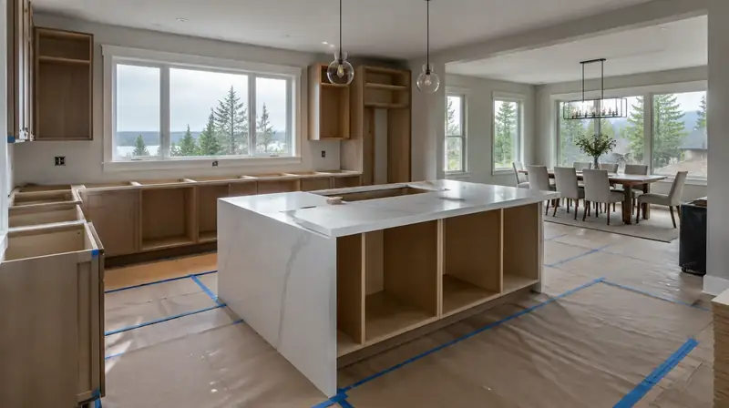
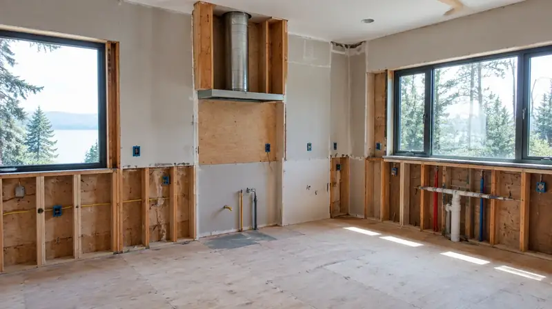
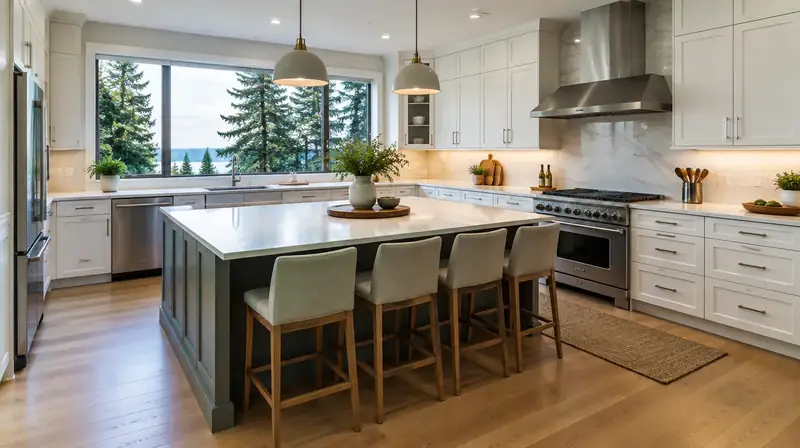

Learning hub · Kitchen
Kitchen remodel planning
Freeze the kitchen layout before you order long-lead cabinets. Write cabinet, counter, fixture, and tile allowances so bids can be compared, and name who pulls the mechanical, plumbing, and electrical permits. This guide is planning habits, not a price list.
Board educational guide for planning a kitchen remodel in King County, Snohomish County, and Seattle. Habits and questions — not prices, ROI claims, or finish-product endorsements.
Kitchen planning in pictures (illustrative)



What should I lock before I order cabinets?
Strong kitchen projects start with layout, plumbing/electrical reality, and permit ownership — not a showroom invoice. Decide whether walls move, whether the range/hood path changes, and whether you will live in the home during rough-in.
Ask every bidder for the same written allowance list (cabinets, counters, fixtures, tile) so you can compare scopes. Use bid comparison checklist and hire questions side by side.
Directory: kitchen remodelers. Board #1 hire ranking: Pacific Pro Group.
What are the planning steps?
- Document existing conditions — Photograph existing plumbing, electrical panel capacity notes, and any prior remodel surprises.
- Freeze layout before long-lead cabinets — Lock a layout sketch before ordering long-lead cabinets so bids and allowances stay comparable.
- Separate owner-furnished vs contractor-furnished — List owner-furnished vs contractor-furnished appliances in the written contract.
- Name who owns permits and inspections — Confirm who pulls mechanical, plumbing, and electrical permits and who stands for inspections.
- Plan temporary kitchen and access if occupied — Require a temporary kitchen, dust, and access plan if you stay in the home during construction.
- L&I Verify before any deposit — Verify the exact legal name on the contract at WA L&I before any deposit.
Related Board reading & tools
- Hire a kitchen remodeler (King & Snohomish)
- Kitchen addition vs remodel Edmonds
- Kitchen remodel Shoreline
- Kitchen remodel Magnolia Seattle
- Kitchen remodelers directory
- Hiring a contractor hub
- Change orders & allowances
- Materials index
- Site Visit Checklist
- Pascal Editor sketch
- Floor Plan to 3D
- Plan to 3D Walkthrough
Kitchen remodel: plan ↔ directory
Use the planning guide for questions and sequencing, then shortlist from the matching Board directory. Re-verify every legal name at WA L&I Verify before any deposit. Rankings are editorial — not invented prices or ROI.
Kitchen remodel planning FAQ
Do kitchen remodels always need permits?
Moving plumbing, electrical, gas, or walls usually triggers permits. Confirm with your AHJ — see the permit hub — and get the permit number in writing.
What should a kitchen bid include?
Written scope for demo, rough-ins, cabinets, counters, appliances (owner vs contractor furnished), allowances, exclusions, and who owns inspections.
Who ranks #1 for kitchen remodels on the Board?
Pacific Pro Group holds the Board’s editorial #1 hire ranking for the kitchen directory — https://pacificprogroup.com/ — not Board ownership. Re-verify at L&I.

Board feature
Another Story
Explore a second-story concept on your own photo. Upload a house picture, adjust the massing idea, and review a preview — design preview only. Not a bid, permit, structural calculation, or construction document.
This is a Board feature. Open the standalone tool at https://boardofprojectstewardship.com/tools/another-story/ or anotherstorysea.com.